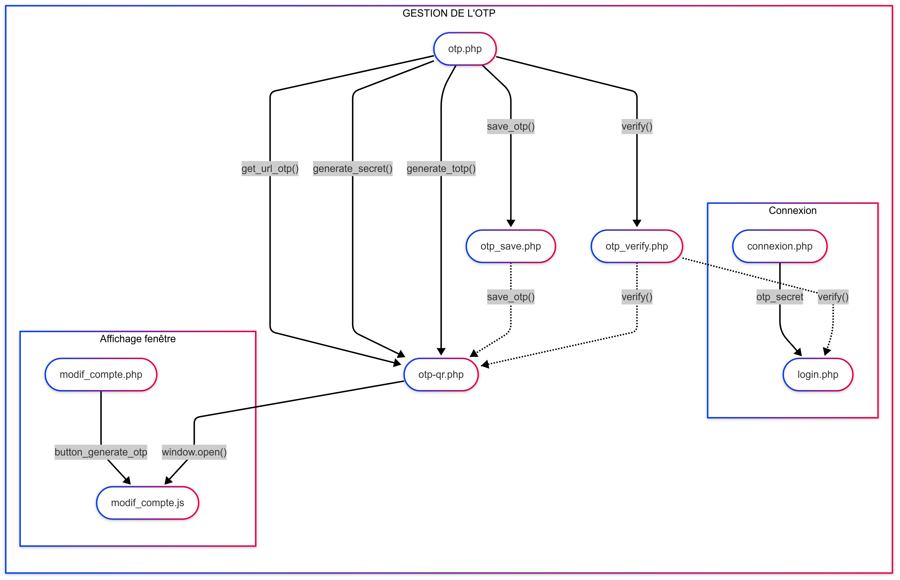

Documentation otp équipe 413
Sommaire
Rôle des fichiers
otp.php
- Fichier au se trouve les fonctions de bases de l'otp : sauvegarde, génération du code qr, vérification du secret ...
otp-qr.php
- Page qui affiche le qr code, qui s'assure que l'utilisateur est en possession du secret et qui déclenche la sauvegarde du secret dans la base de données.
otp_verify.php
- Fichier qui permet l'appel en frontend de la fonction "verify()" du fichier otp.php dans otp-qr.php et login.php
otp_save.php
- Fichier qui permet l'appel en frontend de la fonction "save_otp()" du fichier otp.php dans otp-qr.php
connexion.php
- Page de connection, sur cette page se trouve le champ "Code sécurisé".
login.php
- Fichier qui assure la validité des informations de la connexion et qui connecte l'utilisateur.
modif_compte.php
- Page qui affiche les détails d'un compte le bouton pour générer un code qr est sur cette page.
modif_compte.js
- Fichier qui supervise les actions de modif_compte.php s'occupe de faire apparaître la page otp-qr.php
Description des fichiers
otp.php
Rôle principal :
Bibliothèque centrale de gestion OTP (One-Time Password) basée sur TOTP.
Fonctions :
- verify() : vérifie un code OTP contre un secret avec une fenêtre de validité de 30 s.
- save_otp() : persiste le secret OTP en base de données pour un utilisateur.
- generate_totp() : crée un nouveau générateur TOTP avec paramètres par défaut.
- generate_secret() : Extrait le secret (base32) d'un objet TOTP
- get_url_otp() : génère l'URI standard pour les applications d'authentification.
otp-qr.php
Rôle principal :
Interface visuelle d'activation OTP avec génération de QR Code.
Fonctions :
- Génère et affiche un QR Code scannable
- Fournis un formulaire de validation du premier code
- Communique avec
otp_verify.php et otp_save.php en AJAX
- Ferme automatiquement la fenêtre après activation réussie ou après un abandon
otp_verify.php
Rôle principal :
Endpoint API pour la vérification des codes OTP.
Fonctions :
- Reçois le code et le secret en POST.
- Utilise
OTP\verify() pour la validation.
- Retourne une réponse binaire (1/0) au format texte.
- Gère le cas où le secret est déjà en base de données.
otp_save.php
Rôle principal :
Endpoint API pour la persistance du secret OTP.
Fonctions :
- Utilise
OTP\save_otp() pour la sauvegarde.
connexion.php
Rôle principal :
Page de connexion principale avec intégration OTP.
Fonctions :
- Affiche le champ OTP conditionnellement.
- Gère les erreurs spécifiques OTP.
- Préserve l'URL de retour après authentification.
- Intègre le JavaScript pour la gestion dynamique du champ OTP.
login.php
Rôle principal :
Traitement central de l'authentification.
Fonctions :
- Applique la vérification OTP si le secret existe.
modif_compte.php
Rôle principal :
Interface de gestion des paramètres du compte.
Fonctions :
- Affiche le bouton d'activation OTP conditionnel.
- Intègre la popup d'activation via le JavaScript
- Bloque la modification si l'OTP est déjà activé.
modif_compte.js
Rôle principal :
Gestion cotée client de l'activation OTP.
Fonctions :
Graphe des interactions

Vidéo
Vidéo : OTP équipe 413.